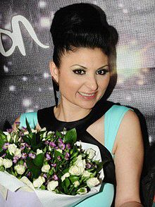

България в Eurovision Song Contest
Sofi Marinova
София Маринова Каменова, по-известна като Софи Маринова e родена на 5 декември 1975 г. в София,
България
Тя е българска поп-фолк и етно-поп певица от ромски произход.
Тя е една от най-популярните певици в
България, известна
с екстремния си пет-октавен вокален диапазон.
Спечелила е множество музикални
награди и конкурси. Често я наричат „ромската перла“ и „ромският славей“.
През февруари 2012 г. тя
спечели българския национален финал на Евровизия с песента "Love Unlimited",
като по този начин стана
представител на България на Евровизия 2012 в Баку, Азербайджан.
